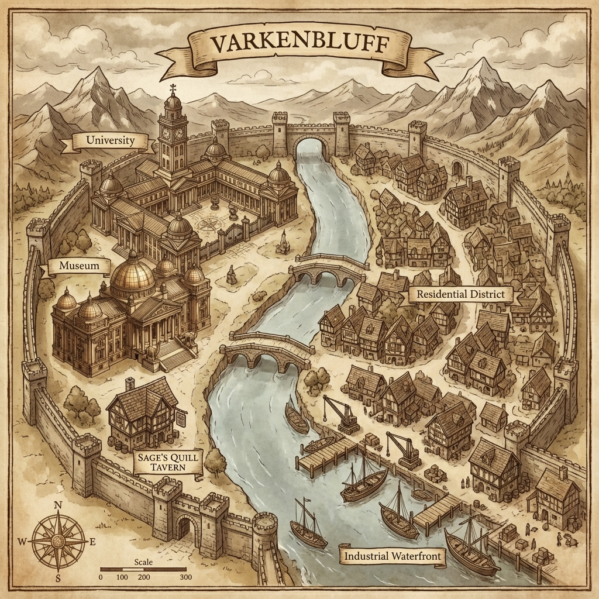

🏰 Varkenbluff
A cosmopolitan city of academics, aristocrats, and careful criminals
Overview
Varkenbluff is a prosperous city known for its prestigious university, world-class museum, and bustling waterfront. The city blends academic prestige with maritime commerce, creating a cosmopolitan atmosphere where scholars and smugglers alike find their footing.
The heist team has established their base of operations beneath the city's Industrial Waterfront, using the hidden Drydock Cellar as a sanctuary between jobs.
Geography
Districts
Academic District
Character: Prestigious, scholarly, refined
- Museum of Natural History — The city's premier showcase of archaeology and natural wonders
- Varkenbluff University — The region's most prestigious institution of higher learning
- Sage's Quill Tavern — A quiet tavern catering to intellectuals
Industrial Waterfront
Character: Working-class, maritime, quietly lawless
- Industrial Waterfront District — Docks, warehouses, and boat repair yards
- The Drydock Cellar — The heist team's hidden base beneath Kraeger's Boatyard
City Layout
MOUNTAINS (North)
↑ 3 miles to Afterlife Casino
│
River
│
╔══════════════════════════════╪══════════════════════════════╗
║ CITY WALLS │ ║
║ ┌─────────────────────┐ │ ┌─────────────────────┐ ║
║ │ ACADEMIC DISTRICT │ │ │ RESIDENTIAL DIST. │ ║
║ │ │ │ │ │ ║
║ │ ╔═══════════════╗ │ │ │ ┌───┐ ┌───┐ ┌───┐ │ ║
║ │ ║ UNIVERSITY ║ │ │ │ │ ⌂ │ │ ⌂ │ │ ⌂ │ │ ║
║ │ ║ ┌──────┐ ║ │ │ │ └───┘ └───┘ └───┘ │ ║
║ │ ║ │CLOCK │ ║ │═════╪═════│ ┌───┐ ┌───┐ ┌───┐ │ ║
║ │ ║ │TOWER │ ║ │ NORTH │ │ ⌂ │ │ ⌂ │ │ ⌂ │ │ ║
║ │ ║ └──────┘ ║ │ BRIDGE │ └───┘ └───┘ └───┘ │ ║
║ │ ╚═══════════════╝ │ │ │ │ ║
║ │ │ │ │ ┌───┐ ┌───┐ ┌───┐ │ ║
║ │ ╔═══════════════╗ │═════╪═════│ │ ⌂ │ │ ⌂ │ │ ⌂ │ │ ║
║ │ ║ MUSEUM ║ │ SOUTH │ └───┘ └───┘ └───┘ │ ║
║ │ ║ (DOMED) ║ │ BRIDGE │ │ ║
║ │ ╚═══════════════╝ │ │ │ │ ║
║ │ │ │ │ │ ║
║ │ ┌───────────────┐ │ │ │ │ ║
║ │ │ SAGE'S QUILL │ │ │ │ │ ║
║ │ │ TAVERN 🍺 │ │ │ │ │ ║
║ │ └───────────────┘ │ │ │ │ ║
║ └─────────────────────┘ │ └─────────────────────┘ ║
║ │ ║
║ ┌──────────────────────────────────────────────────────┐ ║
║ │ INDUSTRIAL WATERFRONT │ ║
║ │ │ ║
║ │ [DOCKS] ════RIVER════ [WAREHOUSES] │ ║
║ │ ⚓ ⚓ │ ▢ ▢ ▢ │ ║
║ │ ┌──────┐ ┌────┴────┐ ┌──────────────┐ │ ║
║ │ │ SHIP │ │ HARBOR │ │ KRAEGER'S │ │ ║
║ │ │ ⛵ │ │ MOUTH │ │ BOATYARD │ ║
║ │ └──────┘ └─────────┘ │ (Drydock │ │ ║
║ │ │ Cellar ↓) │ │ ║
║ │ └──────────────┘ │ ║
║ └──────────────────────────────────────────────────────┘ ║
╚═════════════════════════════════════════════════════════════╝
COAST / SEA (South)
Notable Features
Nearby Locations
| Location | Distance | Notes |
|---|---|---|
| Afterlife Casino | 3 miles north | In mountain cavern |
| Murkmire Dig Site | Outside city | In swamplands |